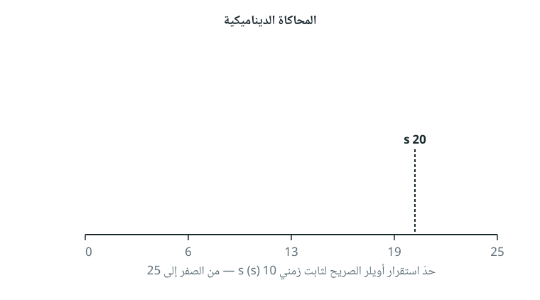

المحاكاة الديناميكية
Dynamic Simulation
حلّ عددي لسلوك نظام مع الزمن انطلاقًا من شروط ابتدائية ومدخلات معرّفة زمنيًا، يُظهر الاستجابة والانتقال بين الحالات لا نقطة توازن واحدة.
المحاكاة الديناميكية حساب كيف يتغيّر نظام مع الزمن، لا كيف يستقر بعد زمن لانهائي. وتُبنى من معادلات حفظ الكتلة والطاقة والزخم مع حدود التراكم الزمني، فتصير مجموعة معادلات تفاضلية-جبرية تُحلّ خطوة بعد خطوة من حالة ابتدائية معلومة. ولهذا تحتاج ما لا تحتاجه محاكاة الحالة المستقرة: قيمة ابتدائية لكل متغير حالة، ومدخلات معرّفة كدالة للزمن، وخطوة تكامل مضبوطة. وتُستعمل في بدء التشغيل والإيقاف، وضبط المتحكمات، وتحديد أحجام صمامات الأمان، وتدريب المشغلين، ودراسة أثر اضطراب مفاجئ. ومثال الضبط: نظام ثابت زمنه 10 ثوانٍ يحتاج خطوة لا تتجاوز 1 ثانية ليُعالَج بعشر خطوات لكل ثابت زمني، وساعة محاكاة تحتاج 3600 خطوة بهذا الحجم.
كيف تعمل الظاهرة؟
متغيرات الحالة هي ما يتراكم: الكتلة في الوعاء، والطاقة في المعدّة، والضغط في حجم الغاز. معادلة الحفظ تكتب على صورة متراكم مشتقته الزمنية تساوي الداخل ناقص الخارج، فينتج نظام dy/dt = f(y,u,t). ويُقدَّم هذا النظام لمكامل عددي: صريح كرونج-كوتا للأنظمة غير المتصلبة، وضمني للأنظمة المتصلبة التي تحوي ثوابت زمنية متباعدة. وتُعالج الأحداث (فتح صمام، إيقاف مضخة) كتغيّر في بنية المعادلة، ويُشترط أن يكون الشرط الابتدائي متوافقًا مع المعادلات وإلا بدأت المحاكاة بقفزة غير فيزيائية.
العلاقة بالأرقام
لنظام من الرتبة الأولى dy/dt = (u − y)/τ حلّ y(t) = u·(1 − e^(−t/τ)): عند t = τ يبلغ 63.2% من التغيّر، وعند 3τ يبلغ 95.0%، وعند 4τ يبلغ 98.2%. وبثابت زمني τ = 10 s وخطوة Δt = 1 s تُنجز عشر خطوات لكل ثابت زمني. وساعة محاكاة واحدة 3600 s ÷ 1 s = 3600 خطوة، ولنموذج بأربعة متغيرات حالة 3600 × 4 = 14 400 تحديث. وحدّ استقرار أويلر الصريح لهذا النظام |1 − Δt/τ| ≤ 1 أي Δt ≤ 2τ = 20 s، فالخطوة 1 s آمنة والخطوة 25 s تنفجر عدديًّا ولو كان النظام مستقرًّا فيزيائيًّا.
مفاهيم متقاربة
الخطأ الأول في الاستعمال أن تُقرأ نتيجة ديناميكية كأنها حالة مستقرة، فيُبنى قرار على قيمة لم تبلغها بعد. والخط الثاني أن يُظن أن كل تغيّر سريع في المنحنى اضطراب حقيقي وهو في الأكثر خطأ عددي من خطوة كبيرة أو من تهيئة غير متوافقة. والثالث أن تُخلط بالمحاكاة شبه المستقرة التي تُهمل حدود التراكم كلها وتصلح فقط لتغيّرات أبطأ كثيرًا من أصغر ثابت زمني في الشبكة.
حدود التطبيق
تفقد المحاكاة صلاحيتها خارج النطاق الذي عُويرت فيه معاملاتها، كمعامل انتقال حرارة أو معامل حركة يُستعمل خارج مدى سرعة التصميم. وتحلّ الأخطاء إذا كانت الخطوة أكبر من أصغر ثابت زمني فتظهر استجابة سريعة زائفة أو انفجار عددي. وتصير الكلفة عالية جدًّا في الأنظمة المتصلبة إن استُعمل مكامل صريح. وتفشل في تمثيل ما ليس في المعادلات: ترسب، ورغوة، وتآكل، وتغيّر خواص المادة مع الزمن.

| الكمية | القيمة | المصدر |
|---|---|---|
| حدّ استقرار أويلر الصريح لثابت زمني 10 s | 20 s | [1] |
| عدد خطوات ساعة محاكاة عند خطوة 1 s | 3600 خطوة | [1] |
| بلوغ الاستجابة عند ثابت زمني واحد | 63.2 % | [1] |
| تحديثات متغيرات الحالة في ساعة محاكاة لنموذج رباعي المتغيرات | 14 400 تحديث | [1] |
المصادر
استشهد بهذا المصطلح
الصيغتان مبنيتان من بيانات الصفحة نفسها: العنوان والتاريخ ورابط النسخة المنشورة.
المحاكاة الديناميكية — Dynamic Simulation. (2026). ديوان المعرفة — انفراد. https://infiradev.com/diwan/terms/term-dynamic-simulation.html
@misc{term-dynamic-simulation2026,
title = {المحاكاة الديناميكية},
titleaddon = {Dynamic Simulation},
howpublished = {{ديوان المعرفة — انفراد} — مرجع علمي عربي},
year = {2026},
url = {https://infiradev.com/diwan/terms/term-dynamic-simulation.html},
urldate = {2026-11-26},
note = {مراجعة علمية: hermes — مراجعة آلية بالتكليف 2026-11-26}
}
راجعه: hermes — مراجعة آلية بالتكليف 2026-11-26 · 2026-11-26 · آخر تحديث 2026-11-26